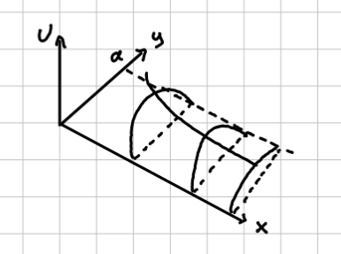
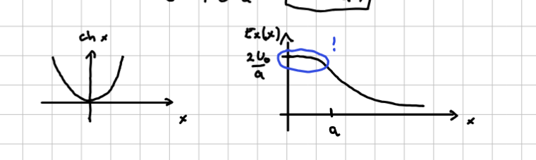

3. vaje iz Elektromagnetnega polja
Table of Contents
1. Ploščati kondenzator s prečnim trakom - nadaljevanje
Prostor med kondenzatorjema, omejen s trakom, ne vsebuje naboja in velja Laplaceova enačba
\[ \nabla ^2 U \left( x, y \right) = 0 \]
Naboji se nahajajo na ploščah kondenzatorja in na traku. Za reševanje potrebujemo še robne pogoje (ang. boundary conditions - BC). Na spodnji, ozemljeni plošči je \( U(x, 0) = 0 \). Zgornja plošča, ki je prav tako ozemljena, ima \( U(x, a) = 0 \). Trak ima napetost \( U(0, y) = U_0 \). Potrebujemo še četrti robni pogoj v neskončnosti, za katerega zahtevamo, da ne divergira.
Za reševanje bomo uporabili metodo separacije spremenljivk \( U(x, y) = X(x), Y(y) \). Upoštevamo definicijo Laplaceovega operatorja v kartezičnih koordinatah in naš nastavek, da dobimo
\[ X'' Y + X Y'' = 0 \implies \frac{X''}{X} = - \frac{Y''}{Y} \]
Razmerji sta enaki samo, če sta konstantni \( \kappa ^2 \). To nam poda dve enačbi
\begin{equation} \label{eq:1} X'' - \kappa ^2 X= 0 \end{equation}ter
\begin{equation} \label{eq:2} Y'' + \kappa ^2 Y = 0 \end{equation}S separacijo spremenljivk smo uspeli dobiti dve navadni diferencialni enačbi drugega reda. Enačbo \ref{eq:1} reši linearna kombinacija eksponentnih funkcij
\[ X(x) = A e^{\kappa x} + B e^{- \kappa x}, \]
medtem ko enačbo \ref{eq:2} reši
\[ Y(y) = C \sin (\kappa y) + D \cos (\kappa y) \]
Upoštevajoč definicijo nastavka za separacijo spremenljivk je splošna rešitev
\begin{equation} \label{eq:3} U(x, y) = \left[ A e^{\kappa x} + B e^{- \kappa x} \right] \left[ C \sin (\kappa y) + D \cos (\kappa y) \right] \end{equation}Zaradi robnega pogoja v neskončnosti je \( A = 0 \). Člen s koeficientom \( B \) bo na ploščah kondenzatorja vedno različen od \( 0 \). Edini način, da zadostimo robnemu pogoju \( U(x, 0) = 0 \), je, da velja \( D = 0 \).
Našo splošno rešitev \ref{eq:3} smo sedaj oklestili do
\begin{equation} \label{eq:4} U(x, y) = Be^{- \kappa x} C \cdot \sin (\kappa y) \end{equation}Pogoj na drugi plošči kondenzatorja je \( U(x, a) = 0 = B e^{-\kappa x} C \sin (a \kappa) \). Edini člen, ki je lahko ničeln, je sinus, torej
\[ \sin (a \kappa) = 0 \implies a \kappa = n \pi, \ n = 1, 2, 3, \ldots \]
\( n \ne 0 \), saj to implicira \( \kappa = 0 \) in nadalje \( U(x, y) = 0 \), kar pa je nezanimiva rešitev. Definiramo novo konstanto \( F = BC \).
Kvantizirali smo našo rešitev, saj ima \( \kappa \) lahko samo določene vrednosti. \( n \)-to rešitev bomo označili z indeksom \( n \). Ta indeks bo prav tako imel pripadajoč koeficient.
Vmesna rešitev \ref{eq:4} je superpozicija vseh možnih rešitev
\[ U(x, y) = \sum\limits_{n = 1}^{\infty} F_n e^{- \kappa_n x} \sin (\kappa_n y) \]
Za iskanje koeficientov bomo uporabili še zadnji neuporabljen robni pogoj \( U(0, y) = U_0 \). Nahajamo se v prostoru, kjer so \( \sin \left( \kappa_n y \right) = \sin \left( \frac{n \pi}{a} y \right) \) bazne funkcije. Skalarno bomo množili z neko drugo bazno funkcijo
\begin{equation} \label{eq:5} \int\limits_0^a U_0 \sin \left( \frac{m \pi}{a } y \right) \, \mathrm{d} y = \int\limits_0^a \sum\limits_{n = 1}^{\infty} F_n e^{- \kappa_n x} \sin \left( \frac{n \pi}{a} y \right) \cdot \sin \left( \frac{m \pi}{a} y \right) \, \mathrm{d} y \end{equation}Leva stran enačbe je po integriranju enaka
\[ \int\limits_0^a U_0 \sin \left( \frac{m \pi}{a} y \right) \, \mathrm{d} y = - \left. \frac{U_0a}{m \pi} \cos \left( \frac{m \pi}{a} y \right) \right|_{y = 0}^{y = a} = \frac{U_0 a}{m \pi} \left[ 1 - (-1)^m \right] \]
Argument kosinusa je vedno večkratnih števila \( \pi \), kar pomeni, da kosinus zaseda samo dve možno vrednosti \( 1 \) ali \( -1 \), odvisno od \( m \).
Na desni strani enačbe \re{eq:5} si lahko zaradi predpostavk, ki jih zamolčimo, privoščimo menjavo integrala in vsote. Sinusne funkcije so si ortogonalne med seboj, zato je produkt sinusnih funkcij enak \( 0 \), če \( m \ne n \). Zapišemo
\[ \sum\limits_{n = 1}^{\infty} F_n \int\limits_0^a \sin \left( \frac{n \pi}{a} y \right) \sin \left( \frac{m \pi}{a} y \right) \, \mathrm{d} y= \sum\limits_{n = 1}^{\infty} F_n \delta_{mn} \int\limits_0^a \sin ^2 \left( \frac{m \pi }{a} y \right) \, \mathrm{d} y = \frac{F_m a}{2} \]
Slednji integral se lahko reši na mnogo načinov, meni najljubši je \( \sin ^2 \alpha = \frac{1}{2} \left[ 1 - \cos 2\alpha \right] \).
Z enačenjem obeh strani enačbe dobimo, da so koeficienti enaki
\begin{equation} \label{eq:6} F_m = \frac{2 U_0}{\pi m} \left( 1 - (-1)^m \right) \end{equation}Koeficiente \ref{eq:6} vstavimo v vmesno rešitev, da dobimo rešitev
\begin{equation} \label{eq:7} U(x, y) = \sum\limits_{n = 1}^{\infty} \frac{2U_0}{m \pi} \left( 1 - (-1)^m \right) \sin \left( \frac{m \pi}{a} y \right) e^{- \frac{m \pi}{a} x} \end{equation}Opazujemo primer, ko je \( x \gg a \). Eksponenti bodo zelo majhni, vendar eden prevlada in sicer \( m = 1 \). To pomeni, da je rešitev v tem primeru
\[ U(x, y) = \frac{4 U_0}{\pi} e^{- \frac{\pi x}{a}} \sin \left( \frac{\pi y}{a} \right) \]
Grafično je rešitev na spodnji sliki, kjer imamo vzdolž \( y \) osi sinusno funkcijo, ki pa z večanjem \( x \) eksponentno pada

Opazujemo tudi primer sredine kondenzatorja, torej \( y = \frac{a}{2} \).
Potencial je enak
\[ U \left( x, \frac{a}{2} \right) = \frac{2 U_0}{\pi} \sum\limits_{m = 1}^{\infty} \frac{1 - (-1) ^m}{m} e^{- \frac{m \pi x}{a}} \sin \left( \frac{m \pi}{2} \right) \]
Namesto potenciala bomo opazovali električno polje, ki kaže vzdolž osi \( x \), saj če bi imelo polje navpično komponento, bi lahko zaradi simetrije kazalo tako gor kakor navzdol. Torej je električno polje \( \vec{E}_x (x) \). Upoštevamo definicijo potenciala \( \vec{E} = - \vec{\nabla} U \), da dobimo
\begin{align*} \vec{E}_x (x) &= - \frac{\partial }{\partial x} U \left( x, \frac{a}{2} \right) \\ &= - \frac{2U_0}{\pi} \sum\limits_{m = 1}^{\infty} \frac{1 - \left( - 1 \right)^m}{m} \sin \left( \frac{m \pi}{2} \right) e^{- \frac{m \pi x}{a}} \left( - \frac{m \pi }{a} \right) \\ &= \frac{2U_0}{a} \sum\limits_{m = 1}^{\infty} \left[ 1 - (-1) ^m \right] \sin \left( \frac{m \pi}{2} \right) e^{- \frac{m \pi x}{a}} \end{align*}S preizkušanjem pridobimo do spoznanja
\[ \left( 1 - \left( -1 \right)^m \right) \sin \left( \frac{m \pi}{2} \right) = \begin{cases} 0; & n \text{ sod }\\ 2; & n = 1, 5, 9, \ldots \\ -2; & n = 3, 7, 11, \ldots \end{cases} \]
Vsota se tako poenostavi v
\[ \vec{E}_x (x) = \frac{4 U_0}{a} \left[ e^{- \frac{\pi x}{a}} - e^{- \frac{3 \pi x}{a}} + e^{- \frac{5 \pi x}{a}} - \ldots \right] = \frac{4U_0}{a} e^{- \frac{\pi x}{a}} \left[ 1 - e^{- \frac{2 \pi x}{a}} + \left( e^{- \frac{2 \pi x}{a}} \right) ^2 - \left( e^{- \frac{2 \pi x}{a}} \right) ^3 + \ldots \right] \]
Prepoznamo geometrijsko vrsto oblike
\[ \frac{1}{1 + f} = 1 - f + f ^2 - f ^3 \ldots \]
Električno polje tako zapišemo v
\[ \vec{E}_x (x) = \frac{4 U_0}{a} e^{- \frac{\pi x}{a}} \frac{1}{1 + e^{- \frac{2 \pi x}{a}}} = \frac{2 U_0}{a} \frac{2}{e^{\frac{\pi x}{a}} + e^{- \frac{\pi x}{a}}} = \frac{2U_0}{a} \frac{1}{\mathrm{cosh} \frac{\pi x}{a}} \]

2. Prepolovljena prevodna cev
Vodoravno ležečo prevodno cev polmera \( a \) vzdolž osi prepolovimo, polovici malenkost razmaknemo v navpični smeri in mednju priključimo konstantno napetost \( U_0 \), kakor v prečnem preseku cevi prikazuje slika. Stena cevi je tanka, razmik med polovicama cevi pa majhen v primerjavi z \( a \).
- Določi potencial električnega polja povsod znotraj cevi kot funkcijo valjnih koordinat \( r \) in \( \phi \) (merjen od vodoravne ravnine). Rezultat zapiši kot neskončno vrsto.
Pokaži, da jakost električnega polja v vodoravni simetrijski ravnini znotraj cevi kaže v navpični smeri in ima velikost
\[ E (r) = \frac{2 U_0 a}{\pi \left( a ^2 - r ^2 \right)}, \]
kjer je \( r \) oddaljenost od osi cevi.
Pokaži, da v navpični simetrijski ravnini znotraj cevi jakost električnega polja tudi kaže v navpični smeri, njena velikost pa je
\[ E(r) = \frac{2 U_0 a}{\pi \left( a ^2 + r ^2 \right)} \]
Naj \( z \) os teče vzdolž valja. Zaradi translacijske invariantnosti je potencial \( U \) neodvisen od \( z \) koordinate. V valju ni naboja in imamo Laplaceovo enačbo
\begin{equation} \label{eq:8} \nabla ^2 U \left( r, \phi \right) = 0 \end{equation}Laplaceov operator v cilindričnih koordinatah neodvisen od \( z \) je
\[ \nabla ^2 = \frac{1}{r} \frac{\partial }{\partial r} \left( r \frac{\partial }{\partial r} \right) + \frac{1}{r ^2} \frac{\partial ^2 }{\partial \phi ^2} \]
Ponovno uporabimo nastavek za separacijo spremenljivk \( U(r, \phi) = R(r) \Phi (\phi) \) in enačba \ref{eq:8} postane
\[ \frac{1}{r} \left( R' + r R'' \right) + \frac{R}{r ^2} \frac{\Phi ''}{\Phi} = 0 \]
Enačbo smo že delili s \( \Phi \), sedaj pa delimo še z \( \frac{r ^2}{R} \), kjer sta obe strani enačbe enaki konstanti \( m ^2 \):
\begin{equation} \label{eq:9} \frac{r}{R} \left( R' + r R'' \right) = - \frac{\Phi ''}{\Phi} = m ^2 \end{equation}Imamo dve enačbi
\[ \Phi '' + m ^2 \Phi = 0 \quad r ^2 R'' + r R' - m ^2 R = 0 \]
Problem smo ponovno poenostavili na dve navadni diferencialni enačbi. Rešitev enačbe za \( \Phi \) je linearna kombinacija sinusa in kosinusa
\[ \Phi \left( \phi \right) = A_m \sin \left( m \phi \right) + B_m \cos \left( m \phi \right) \]
Naš cilindrični problem je periodičen \( \phi \) s periodo \( 2 \pi \). Ta periodičnost nam pove, da je \( m \) celo število, zato smo koeficiente tudi že indeksirali.
Zavržemo \( m = 0 \), saj to pomeni, da imamo enačbo \( \Phi'' = 0 \), kar pa pomeni, da je \( \Phi \) linearna funkcija.
Rešitve druge diferencialne enačbe so potenčne funkcije
\begin{equation} \label{eq:10} R(r) = C_m r^m + D_m r^{-m} \end{equation}Splošna rešitev je tako
\[ U \left( r, \phi \right) = \sum\limits_{m = 1}^{\infty} \left( A_m \sin \left( m \phi \right) + B_m \cos \left( m \phi \right) \right) \left( C_m r - D_m r^{-m } \right) \]
Pred nadaljevanjem moramo določiti robne pogoje. Upoštevali smo že robni pogoj periodičnosti \( 2\pi \) v \( \phi \). Pri drugem robnem pogoju zahtevamo, da imata polovici sfer razliko v potencialu enako \( U_0 \). To zapišemo
\[ U(a, \phi) = \begin{cases} \frac{U_0}{2}; & 0 < \phi < \pi \\ -\frac{U_0}{2}, &\pi < \phi < 2 \pi \end{cases} \]
Imamo še en “zdravorazumski” pogoj, kjer želimo, da \( R(r) \) ne divergira, specifično pri \( r =0 \). To pomeni, da bodo koeficienti \( D_m = 0 \forall m \), saj \( r^{-m} \) divergira pri \( r = 0 \).
Grafična slika drugega robnega pogoj nam pokaže, da je potencial liha funkcijo. To pomeni, da se lahko samo liha funkcija pojavi v končni rešitvi, torej sinusi. \( A_m = 0 \), saj s tem eliminiramo kosinusne člene.
Ostane nam
\[ U(r, \phi) = \sum\limits_{m = 1}^{\infty} F_m r^m \sin \left( m \phi \right), \]
kjer smo definirali \( B_m C_m = F_m \). Drugi robni pogoj upoštevamo še kvalitativno
\[ U(a, \phi) = \sum\limits_{m = 1}^{\infty} F_m a^m \sin \left( m \phi \right) \]
Za reševanje te enačbe uporabimo skalarni produkt s \( \sin \left( n \phi \right) \). Imamo torej
\[ \int\limits_0^{2\pi} U (a, \phi) \sin \left( n \phi \right) \, \mathrm{d} \phi = \int\limits_0^{2\pi} \sum\limits_{m = 1}^{\infty} F_m a^m \sin \left( m \phi \right) \sin \left( n \phi \right) \, \mathrm{d} \phi \]
Upoštevajoč robne pogoje desna stran postane
\begin{equation} \label{eq:11} \frac{U_0}{2} \int\limits_0^{\pi} \sin \left( n \phi \right) \, \mathrm{d} \phi - \frac{U_0}{2} \int\limits_{\pi}^{2 \pi} \sin \left( n \phi \right) \, \mathrm{d} \phi = \int\limits_0^{2\pi} \sum\limits_{m = 1}^{\infty} F_m a^m \sin \left( m \phi \right) \sin \left( n \phi \right) \, \mathrm{d} \phi \end{equation}Za začetek rešimo levo stran enačbe \ref{eq:11}}
\begin{align*} \frac{U_0}{2} \left[ \int\limits_0^{\pi} \sin \left( n \phi \right)\, \mathrm{d} \phi - \int\limits_{\pi}^{2 \pi} \sin \left( n \phi \right) \, \mathrm{d} \phi \right] &= \frac{U_0}{2} \left[ - \left. \frac{1}{n} \cos \left( n \phi \right) \right|_0^{\pi} + \left. \frac{1}{n} \cos \left( n \phi \right) \right|_{\pi}^{2 \pi} \right] \\ &= \frac{U_0}{2n} \left[ - \cos \left( n \pi \right) + 1 + 1 - \cos \left( n \pi \right) \right] \\ &= \frac{U_0}{n} \left[ 1 - \left( -1 \right)^n \right] \end{align*}Rešimo še desno stran enačbe, kjer upoštevamo, da lahko zamenjamo vsoto in integral
\begin{align*} \int\limits_0^{2 \pi} \sum\limits_{m = 1}^{\infty} F_m a^m \sin \left( n \phi \right) \sin \left( m \phi \right) \, \mathrm{d} \phi &= \sum\limits_{m = 1}^{\infty} a^m F_m \int\limits_0^{2\pi} \sin \left( \phi m \right) \sin \left( \phi n \right) \, \mathrm{d} \phi \\ &= \sum\limits_{m = 1}^{ \infty} a^m F_m \delta_{mn} \int\limits_0^{2\pi} \sin ^2 \left( m \phi \right) \, \mathrm{d} \phi \\ &= \sum\limits_{m = 1}^{\infty} a^m F_m \delta_{mn} \pi = a^n F_n \pi \end{align*}Enačba \ref{eq:11} je tako
\[ a^n F_n \pi = \frac{U_0}{n} \left( 1 - (-1)^n \right) \implies F_n = \frac{U_0 \left( 1 - (-1)^n \right)}{n \pi a^n} \]
Splošna rešitev je tako
\[ U \left( r, \phi \right) = \sum\limits_{m = 1}^{\infty} \frac{U_0}{m \pi} \left( 1 - \left( - 1 \right)^m \right) \sin \left( m \phi \right) \left( \frac{r}{a} \right)^m \]